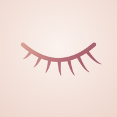

Lash LedgerHow can we help?
Lash Ledger is the private lash map and client book for lash artists. One-time purchase, no subscription, no account.
Email supportWe usually reply within two business days.
Common questions
Where is my data stored?
Only on your iPhone. There’s no account and no cloud. That’s why regular backups matter — see below.
How do I back up or move to a new phone?
Open Settings › Backup › Export backup. Save the file to Files, iCloud Drive, or AirDrop it to your new phone. On the new phone, install Lash Ledger and use Settings › Backup › Import backup. Importing replaces what’s on that phone.
How does “Repeat last map” work?
On a client’s profile, tap “Repeat last map”. A new appointment starts with the previous map already filled in. Tap “Edit map” to change a zone, then save.
Can I map each eye differently?
Yes. In the map builder, turn on “Edit eyes separately”. The right eye starts as a copy of the left, and you switch between them at the top.
How are refill dates worked out?
From the client’s last visit plus their refill interval. Set it per client (2, 3 or 4 weeks) or leave it on Auto: “Refill 2 weeks” uses 14 days, “Refill 3 weeks” 21 days, and a full set uses your default from Settings. Removals and lash lifts don’t start a refill window.
I’m not getting refill reminders.
Turn on Refills › Morning reminders, and make sure notifications are allowed for Lash Ledger in iPhone Settings › Notifications. Reminders arrive at the time you choose on the morning a client’s window opens.
How do I put my studio name on map cards?
Settings › Your studio. The studio and artist name appear on every map card you share.
Is there a subscription?
No. Lash Ledger is a one-time purchase with no subscription, no in-app purchases and no ads.